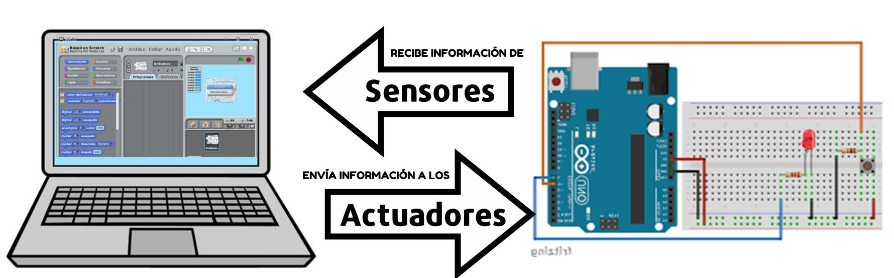
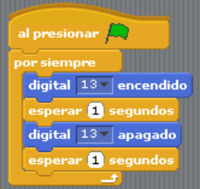
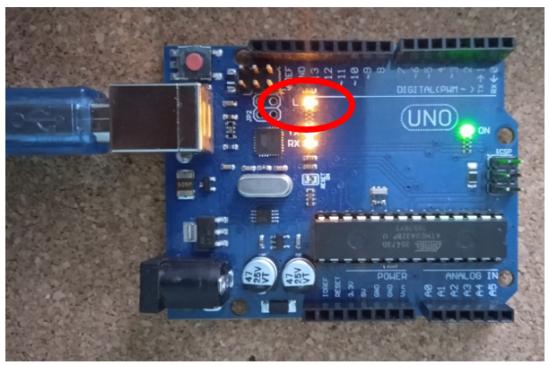

Es una plataforma de programación visual que combina el lenguaje de programación Scratch con el mundo de Arduino. Incluye nuevos bloques para controlar sensores y actuadores conectados a la placa microcontroladora.
Es importante saber que nuestra placa Arduino sólo ejecutará el programa mientras esté conectada al PC. Con S4A no podemos conectar la placa Arduino a una fuente de alimentación y que siga ejecutando el último programa que le hemos cargado.
Además de instalar el IDE de Arduino en la computadora y el Firmware en la Placa microcontroladora, necesitaremos instalar el IDE de S4A para que puedas desarrollar tus programas. Para ello:
Finalmente, abre S4A y verás el mensaje “Buscando placa…” espera unos minutos hasta que se sincronice la placa con el IDE y listo. ¡Ya puedes comenzar a programar!
Una de las limitaciones que tiene S4A es la conectividad. Los componentes deben conectarse de una manera determinada para su buen funcionamiento. Esto no impide que podamos aprender a programar con esta plataforma, solo limitará el tipo de proyectos que podemos hacer con ella.
Los diferentes componentes que podemos tratar son:
Nuestro primer programa será un LED que parpadea cada segundo. Para ello vamos a utilizar la salida digital 13 porque tiene un LED integrado en la placa UNO, así no tendremos que realizar ningún circuito. El Programa sería así:
Al ejecutarlo, pulsando el botón bandera verde, notarás que el LED integrado parpadea:
Los proyectos que realizaremos en la Unidad, serán presentados en un informe de formato digital con la siguiente estructura:
En el siguiente link descargarás un ejemplo de proyecto, te servirá de guía a la hora de realizar futuros trabajos: Proyecto 0